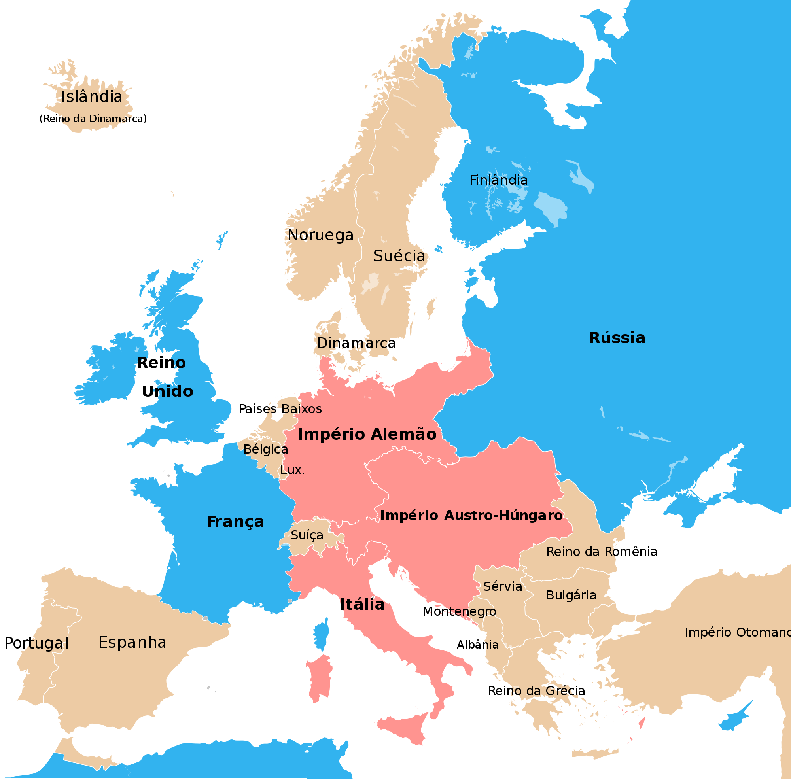
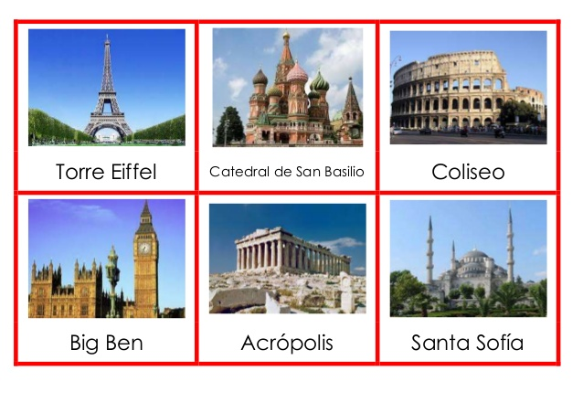

Europa |
|
A importância do continente europeu reside no fato de este ter sido o palco das maiores transformações da história da humanidade e de algumas de suas mentes mais brilhantes, como a Segunda Guerra, a Revolução Industrial na segunda metade do século XVIII e as teorias de Copérnico e Einstein, europeus que mudaram a história da ciência. A geografia política da Europa é totalmente determinada pela história desse continente. Após inúmeros séculos de ocupações, invasões e revoluções, a Europa chegou ao seu formato atual, embora ainda instável em algumas regiões como a Geórgia, a questão Basca, etc. Atualmente a mudança mais significativa é a formação do grande bloco econômico da União Européia (UE) que abrange 15 países do total de 48 do continente. Entre os países da UE foram abolidas todas as barreiras comerciais e de fronteira permitindo-se o trânsito livre entre estes países. Por se localizar totalmente no hemisfério norte e com uma altitude que fica em torno de 340m, o continente europeu apresenta climas frios e temperados, divididos em três tipos principais: o oceânico que abrange a faixa da Noruega até Portugal, o clima continental em parte da Alemanha, e nos países bálticos até a Polônia, e o clima mediterrâneo nos países da costa, chegando até a França. Esse clima propicia o surgimento das vegetações de Tundra mais ao norte, do bosque boreal ou de coníferas ao sul dessa área, bosques temperados nas regiões costeiras com uma variação na costa mediterrânea, apresentando espécies típicas desse local como as azinheiras e os sobreiros, e estepes que se estendem da Hungria até a Ucrânia. Embora seja o continente mais explorado pelo homem, ele ainda abriga uma quantidade considerável de espécies de animais e de vegetais, sendo que nas regiões montanhosas encontram-se espécies típicas como o alce e o cabrito montês. A baixa altitude do continente e o clima não tão extremo quanto em outras partes do globo, facilitaram a ocupação do lugar por povos vindos de outras regiões da Europa que foram decisivos no processo de diferenciação da cultura, como por exemplo, os povos de origem germânica (Visigodos, Ostrogodos, saxões, etc.) que deram origem às chamadas “invasões bárbaras” durante os séculos IV e V. |

